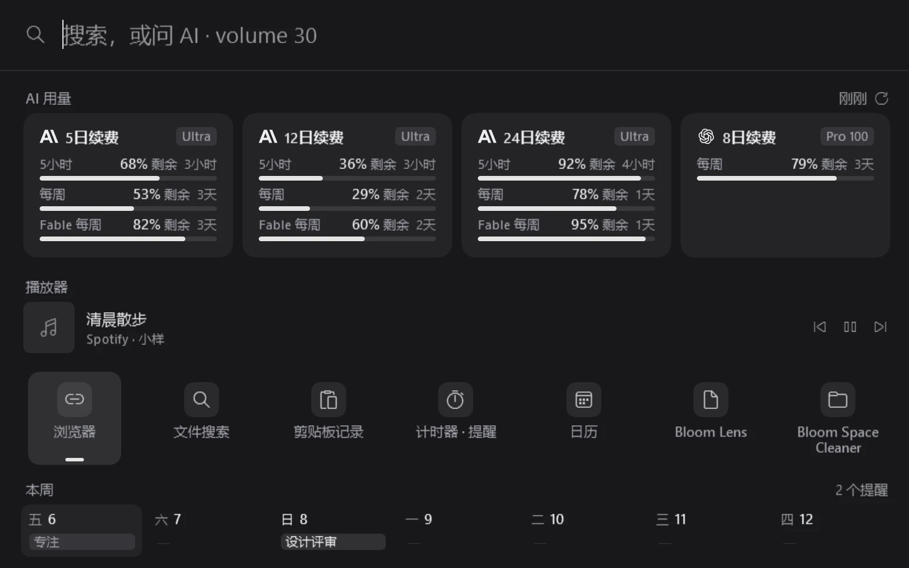
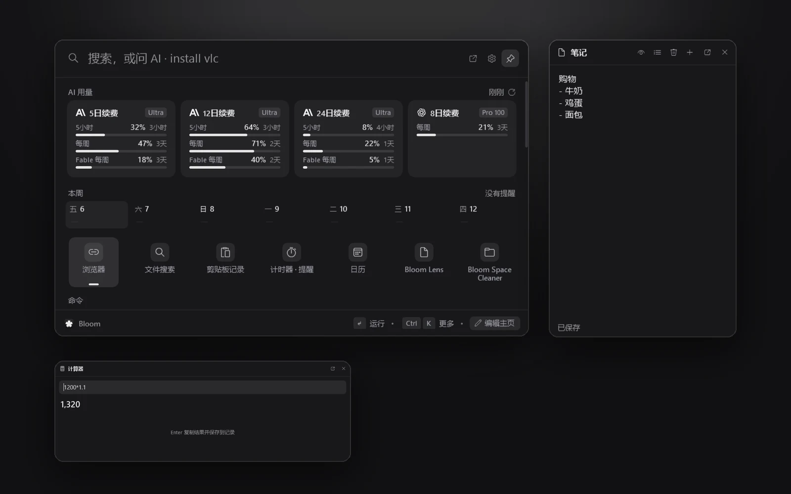
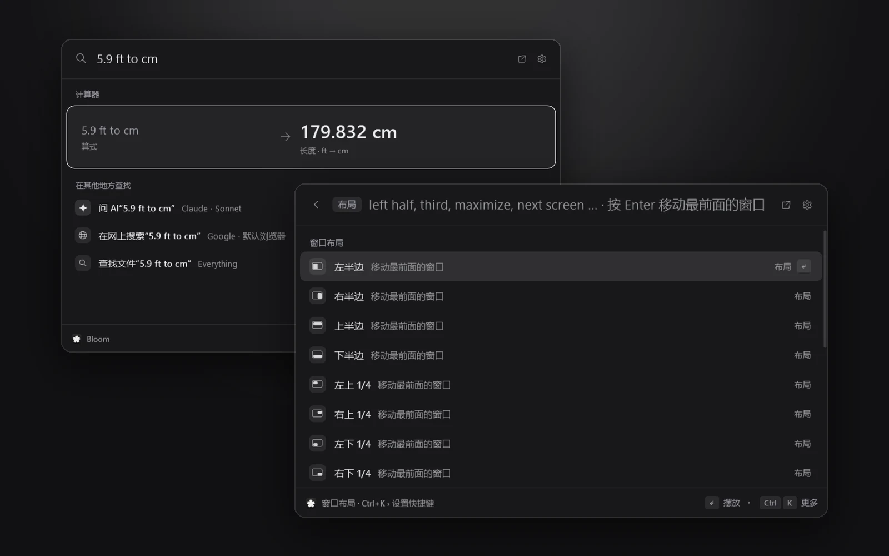
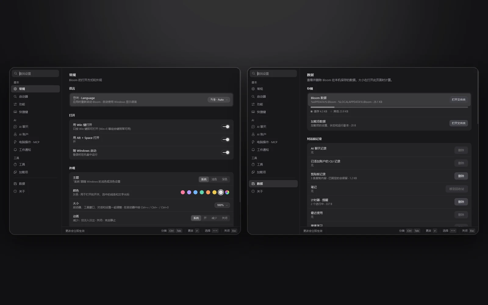
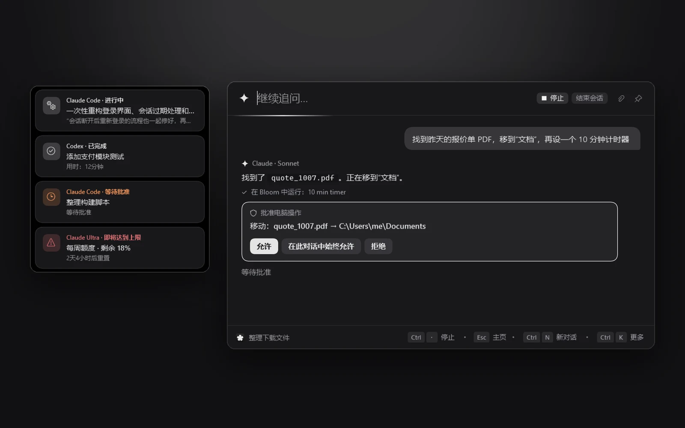
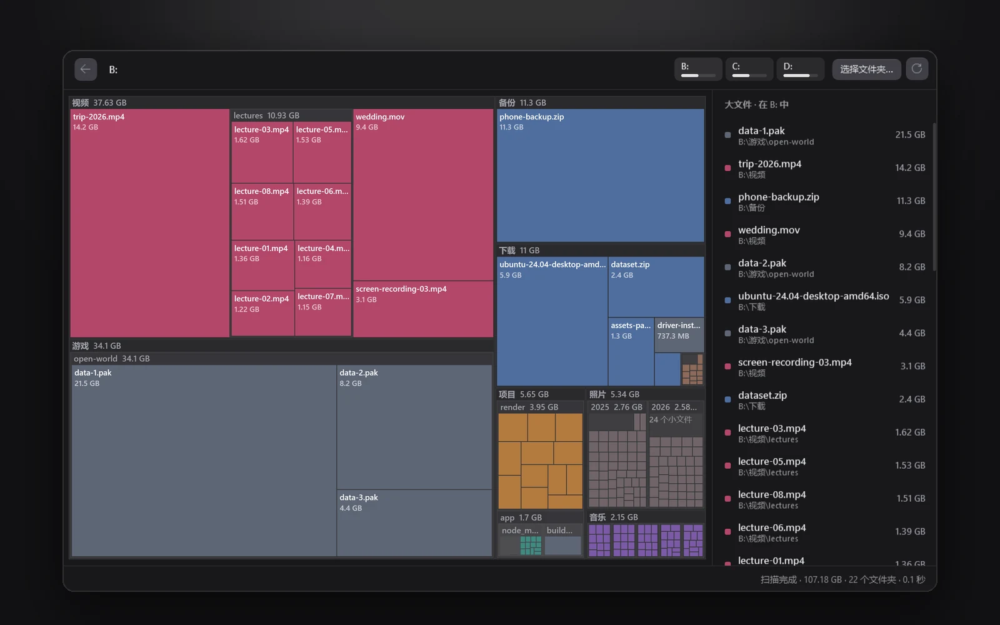

一个 键，一行搜索栏。
保存到 Bloom 日历
一款 Windows 启动器。在搜索栏输入内容并按 Tab，这台电脑上已登录的 Claude Code 或 Codex 就会立刻作答。
不接 AI 也能直接用来启动应用、计算和查找文件，也可以通过 API 密钥连接。
免费，MIT 开源 · Windows 10、11（64 位）
一个启动器，一应俱全。主页、工具窗口、窗口布局与设置尽在一处




主页。剩余 AI 额度与 Token、本周日程和常用工具一目了然
就在输入的这一行直接提问。搜索栏里写好的内容，按一下 Tab 就能直接问 AI。
快速 AI，Claude Sonnet
deadline 的意思是截止期限。例如 The report deadline is Friday at 3 PM.，意思是报告的截止时间是周五下午 3 点。
演示画面中的提问与回答示例
直接接入你正在用的 AI。直接用这台电脑上已登录的 Claude Code 与 Codex，或填入自己的 API 密钥即可使用
接入的 AI已在使用的工具
在 Bloom 中做的事交给 AI 的任务
用 AI 优化工作流程。从整理文件到备忘、计时器、日程，各种电脑操作都可以一次交给它。

API 密钥由 Windows 加密并仅保存在这台电脑上。
屏幕任意区域，框选即处理。在鼠标框选的位置当场向 AI 提问、翻译或提取文字。
问 AI：这条消息里的待办事项
在周五下午 3 点开会前准备好修改后的幻灯片。
翻译，Claude Haiku
会议已改到周五下午 3 点，请带上修改后的幻灯片。
The meeting has moved to Friday at 3 PM. Please bring the updated slides.
复制文字，Windows OCR
The meeting has moved to Friday at 3 PM.
Please bring the updated slides.
已复制到剪贴板
4实时翻译5固定在屏幕上6截图7调色板
- CtrlAltL框选区域
- CtrlAltT直接翻译
- CtrlAltO直接复制文字
以上为演示画面示例。 不妨直接按数字键试试。
大文件，用地图找。把磁盘按大小分成方块来看，不用的大文件直接送进回收站。

在搜索栏输入 space 并按 Enter，即可打开 Bloom Space Cleaner。
剩余额度与 Token 开销一目了然。在主页直接查看各账户的剩余额度，以及按 API 价格折算的 Token 费用。
AI 用量 刚刚
Claude Ultra
5小时68% 剩余，3小时
每周53% 剩余，3天
Fable 每周82% 剩余，3天
Token 用量 30天
30天前今天
以上数字为演示示例，并非实际付费金额，而是将相同 Token 按 API 价格计算的参考金额。
Token 区块默认关闭，即使开启也只会统计这台电脑上 Claude Code 与 Codex 的记录，不包含对话内容。
在输入框里写下就行。韩英输入法错打、初声、算式、单位换算、定时提醒，一行全搞定
未切换韩/英输入法打出的字符
초개ㅡㄷ
Chrome
按键盘上相同位置的英文字母识别，为你找到 Chrome。
ㅁㅁㅈ记事本初声搜索gcGoogle Chrome英文名首字母45000*1.149,500计算后按 Enter 复制5.9 ft to cm179.832 cm单位换算laundry in 30 min30 分钟后提醒计时器与提醒yt catsYouTube 搜索直接搜索网站
在空搜索栏里只输入 ? 试试，Bloom 会按类别展示所有能听懂的表达。
按需添加扩展功能。由 Bloom 下载、校验并运行的官方加载项


在 设置 › 加载项 中一键即可下载，仅在与内置哈希值一致时才会安装。
下载之前。关于安装与隐私的四点说明
SmartScreen 警告
由于目前尚未进行代码签名，可能会弹出“Windows 已保护你的电脑”窗口。请点击 更多信息 › 仍要运行。
安装位置
安装在当前账户的 %LOCALAPPDATA%\BloomLauncher 下，并创建开始菜单快捷方式。仅在电脑尚未安装 .NET 10 Desktop Runtime 时才会一并安装并请求权限批准。
发送给 AI 的内容
只有你主动发送的提问和附件、用 Bloom Lens 框选的画面、要翻译的文字，以及电脑操作工具的结果才会发送给 AI。
API 密钥由 Windows 加密并仅保存在这台电脑上，仅在向对应服务发起请求时使用。
更新与卸载
启动后会检查一次新版本，并在下次启动时应用更新。可以在 设置 › 关于 中关闭自动检查。
在 设置 › 数据 › 卸载 Bloom 中可以选择是否一并清除对话和设置。如果从 Windows 设置 › 应用 中卸载，数据会保留下来。
一个 键就够了。
BloomLauncher-win-Setup.exe，免费开源。如果弹出“Windows 已保护你的电脑”窗口，请点击 更多信息 › 仍要运行。 版本与更新内容
用 PowerShell 安装
irm https://raw.githubusercontent.com/hyeon1035298/Bloom/main/install.ps1 | iex 下载并运行与上方按钮相同的安装文件。 查看脚本